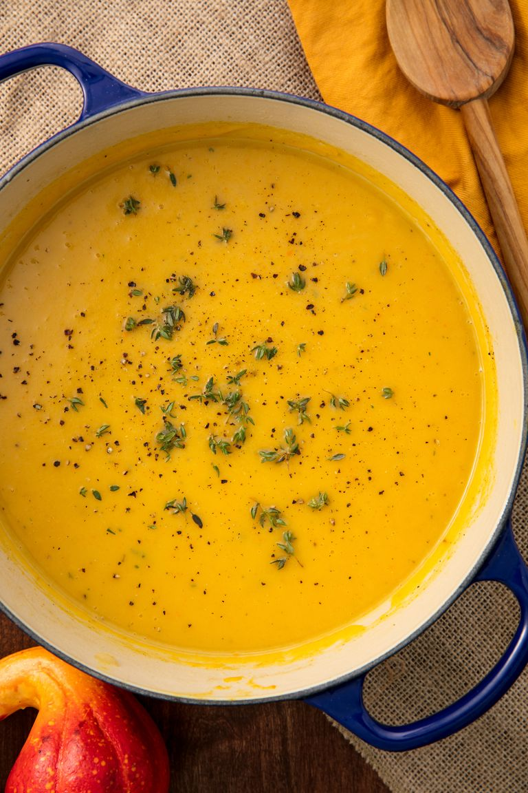

Butternut Squash Soup

Delicious and very easy to make, a perfect autumn dinner recipe!
Ingredients
- 6 tablespoons chopped onion
- 4 tablespoons margarine
- 6 cups peeled and cubed butternut squash
- 3 cups water
- 4 cubes chicken bouillon
- ¼ teaspoon ground black pepper
- 8 ounce cream cheese
Steps
- In a large saucepan, saute onions in margarine until tender.
- Add squash, water, bouillon, black pepper.
- Bring to boil; cook 20 minutes, or until squash is tender.
- Puree squash and cream cheese in a blender or food processor until smooth.
- Return to saucepan, and heat through. Do not allow to boil.